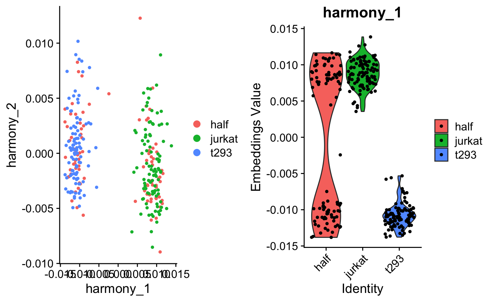
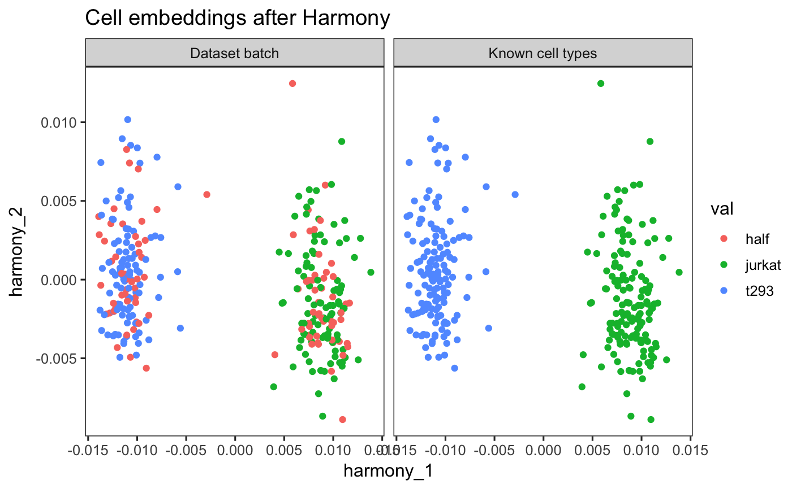

Run Harmony algorithm with Seurat and SingleCellAnalysis pipelines.
RunHarmony(object, group.by.vars, ...) # S3 method for seurat RunHarmony(object, group.by.vars, dims.use = NULL, theta = NULL, lambda = NULL, sigma = 0.1, nclust = NULL, tau = 0, block.size = 0.05, max.iter.harmony = 10, max.iter.cluster = 20, epsilon.cluster = 1e-05, epsilon.harmony = 1e-04, plot_convergence = FALSE, verbose = TRUE, reference_values = NULL, reduction.save = "harmony", ...) # S3 method for Seurat RunHarmony(object, group.by.vars, reduction = "pca", dims.use = NULL, theta = NULL, lambda = NULL, sigma = 0.1, nclust = NULL, tau = 0, block.size = 0.05, max.iter.harmony = 10, max.iter.cluster = 20, epsilon.cluster = 1e-05, epsilon.harmony = 1e-04, plot_convergence = FALSE, verbose = TRUE, reference_values = NULL, reduction.save = "harmony", assay.use = "RNA", project.dim = TRUE, ...) # S3 method for SingleCellExperiment RunHarmony(object, group.by.vars, dims.use = NULL, theta = NULL, lambda = NULL, sigma = 0.1, nclust = NULL, tau = 0, block.size = 0.05, max.iter.harmony = 10, max.iter.cluster = 20, epsilon.cluster = 1e-05, epsilon.harmony = 1e-04, plot_convergence = FALSE, verbose = TRUE, reference_values = NULL, reduction.save = "HARMONY", ...)
Pipeline object. Must have PCA computed.
Which variable(s) to remove (character vector).
other parameters
Which PCA dimensions to use for Harmony. By default, use all
Diversity clustering penalty parameter. Specify for each variable in group.by.vars. Default theta=2. theta=0 does not encourage any diversity. Larger values of theta result in more diverse clusters.
Ridge regression penalty parameter. Specify for each variable in group.by.vars. Default lambda=1. Lambda must be strictly positive. Smaller values result in more aggressive correction.
Width of soft kmeans clusters. Default sigma=0.1. Sigma scales the distance from a cell to cluster centroids. Larger values of sigma result in cells assigned to more clusters. Smaller values of sigma make soft kmeans cluster approach hard clustering.
Number of clusters in model. nclust=1 equivalent to simple linear regression.
Protection against overclustering small datasets with large ones. tau is the expected number of cells per cluster.
What proportion of cells to update during clustering. Between 0 to 1, default 0.05. Larger values may be faster but less accurate
Maximum number of rounds to run Harmony. One round of Harmony involves one clustering and one correction step.
Maximum number of rounds to run clustering at each round of Harmony.
Convergence tolerance for clustering round of Harmony Set to -Inf to never stop early.
Convergence tolerance for Harmony. Set to -Inf to never stop early.
Whether to print the convergence plot of the clustering objective function. TRUE to plot, FALSE to suppress. This can be useful for debugging.
Whether to print progress messages. TRUE to print, FALSE to suppress.
(Advanced Usage) Defines reference dataset(s). Cells that have batch variables values matching reference_values will not be moved
Keyword to save Harmony reduction. Useful if you want to try Harmony with multiple parameters and save them as e.g. 'harmony_theta0', 'harmony_theta1', 'harmony_theta2'
Name of dimension reduction to use. Default is PCA.
(Seurat V3 only) Which assay to Harmonize with (RNA by default).
Project dimension reduction loadings. Default TRUE.
Seurat (version 2) object. Harmony dimensions placed into dimensional reduction object harmony. For downstream Seurat analyses, use reduction.use='harmony' and reduction.type='harmony'.
Seurat (version 3) object. Harmony dimensions placed into dimensional reduction object harmony. For downstream Seurat analyses, use reduction='harmony'.
SingleCellExperiment object. After running RunHarmony, the corrected cell embeddings can be accessed with reducedDim(object, "Harmony").
## Seurat Version 2 if (requireNamespace("Seurat", quietly = TRUE)) { pkg_version <- packageVersion('Seurat') if (pkg_version >= "2.0" & pkg_version < "3.0") { data(cell_lines_small_seurat_v2) seuratObject <- RunHarmony(cell_lines_small_seurat_v2, 'dataset', lambda = .1, verbose = FALSE) ## Harmony cell embeddings harmony_embedding <- Seurat::GetCellEmbeddings( seuratObject, 'harmony' ) harmony_embedding[seq_len(5), seq_len(5)] ## Harmony gene loadings harmony_loadings <- Seurat::GetGeneLoadings( seuratObject, 'harmony' ) harmony_loadings[seq_len(5), seq_len(5)] p1 <- Seurat::DimPlot(seuratObject, reduction.use = 'harmony', group.by = 'dataset', do.return = TRUE) p2 <- Seurat::VlnPlot(seuratObject, features.plot = 'Harmony1', group.by = 'dataset', do.return = TRUE) cowplot::plot_grid(p1,p2) } } ## Seurat Version 3 if (requireNamespace("Seurat", quietly = TRUE)) { pkg_version <- packageVersion('Seurat') if (pkg_version >= "3.0" & pkg_version < "4.0") { data(cell_lines_small_seurat_v3) seuratObject <- RunHarmony(cell_lines_small_seurat_v3, 'dataset', lambda = .1, verbose = FALSE) ## Harmony cell embeddings harmony_embedding <- Seurat::Embeddings(seuratObject, 'harmony') harmony_embedding[seq_len(5), seq_len(5)] ## Harmony gene loadings harmony_loadings <- Seurat::Loadings(seuratObject, 'harmony') harmony_loadings[seq_len(5), seq_len(5)] p1 <- Seurat::DimPlot(seuratObject, reduction = 'harmony', group.by = 'dataset', do.return = TRUE) p2 <- Seurat::VlnPlot(seuratObject, features = 'harmony_1', group.by = 'dataset', do.return = TRUE) cowplot::plot_grid(p1, p2) } }#>## SingleCellExperiment if (requireNamespace("SingleCellExperiment", quietly = TRUE)) { data(cell_lines_small_sce) sceObject <- RunHarmony(cell_lines_small_sce, 'dataset', lambda = .1, verbose = FALSE) ## Harmony cell embeddings harmony_embedding <- SingleCellExperiment::reducedDim( sceObject, 'HARMONY' ) harmony_embedding[seq_len(5), seq_len(5)] ## Plot the Harmonized embeddings ## Colored by batch and cell type SingleCellExperiment::reducedDim(sceObject, 'HARMONY') %>% cbind(SingleCellExperiment::colData(sceObject)) %>% data.frame() %>% tidyr::gather(key, val, dataset, cell_type) %>% dplyr::mutate(key = dplyr::case_when( key == 'dataset' ~ 'Dataset batch', key == 'cell_type' ~ 'Known cell types' )) %>% dplyr::sample_frac(1L, FALSE) %>% ggplot2::ggplot(ggplot2::aes(x = harmony_1, y = harmony_2, color = val)) + ggplot2::geom_point() + ggplot2::facet_wrap(~key) + ggplot2::theme_test(base_size = 12) + ggplot2::labs(title = 'Cell embeddings after Harmony') }